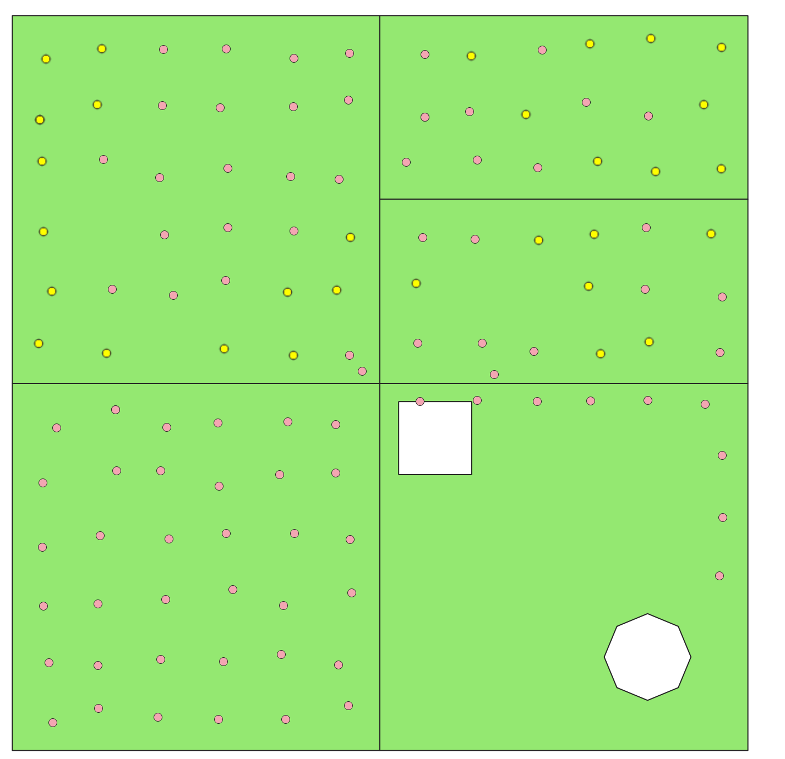
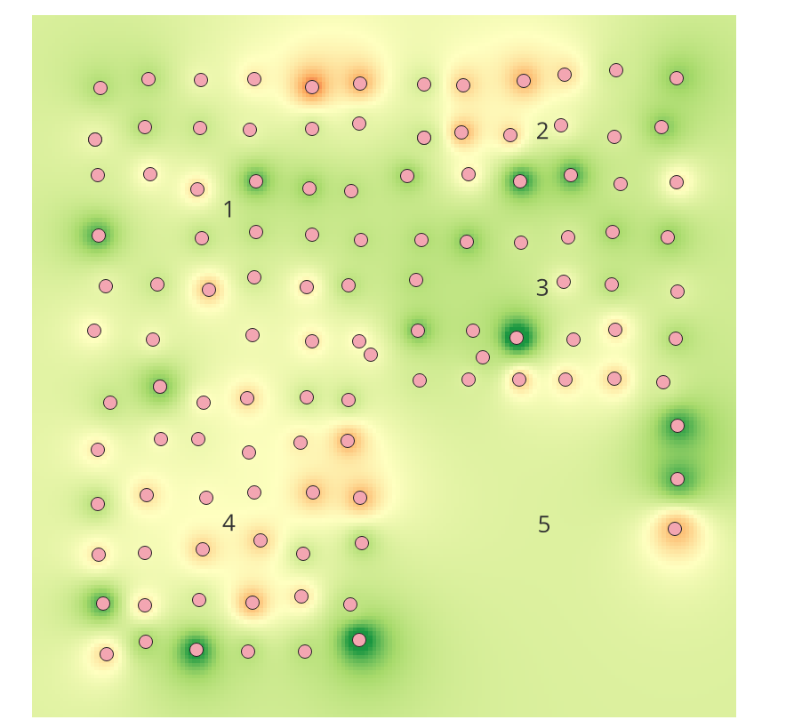
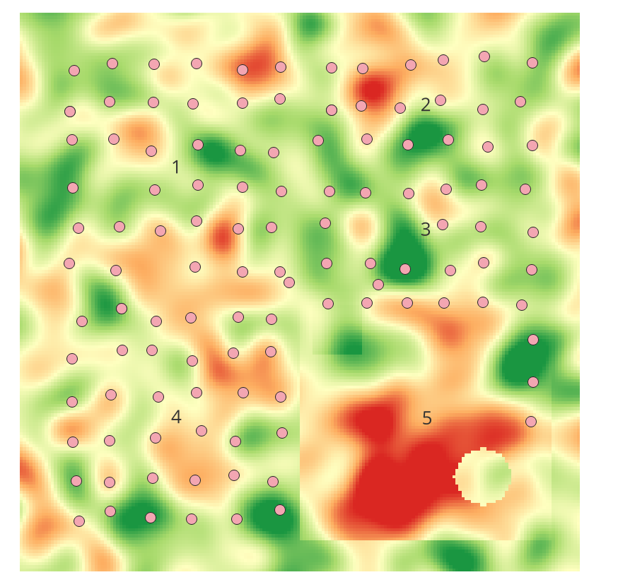
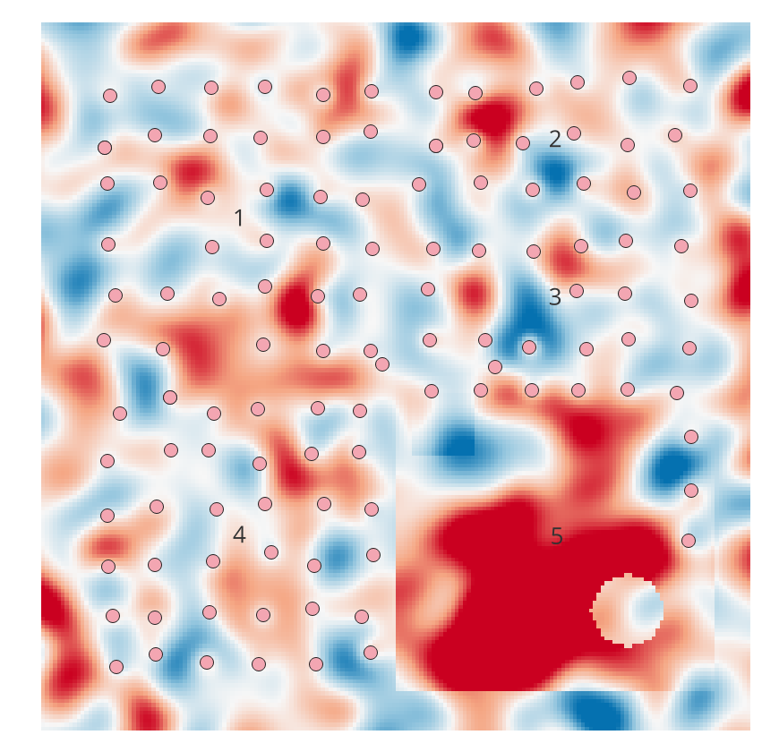

Lab 05 · October 2026
Interpolation and Fertilization
The question
How much of the fields are viable for corn, and how accurate is interpolation for this purpose?
The data
I used the provided file, LAB05_simplified_farm.gpkg, to provide the fields as a vector layer and the samples as a set of points in EPSG:32614. For comparing the accuracy of interpolation, the provided file LAB05_truth-p.tif was used. It is worth noting that the farm in synthetic.
The method
First, since the amount of phosphorus in the soil P changes units from percentage to decimal, we created a fixed value using a new field that convered it all into a decimal from 0 to 1 for the share of phosphorus. Then, we measured the distance from the center to the point furthest from any sample in field 1 as well as the distance from field 5's center to the nearest sample. Afterward, we used IDW to fill in the gaps with Distance Coefficient P=2 and compared the result to the ground truth provided.




What I found
IDW measured that very little of the map were far below the minimum, while the true value showed that a large portion of Field 5 is below the minimum requirement for corn. This shows a limitation of IDW interpolation on limited data.
What this does not show
This does not show that interpolation through IDW is not useful. With more data that is more evenly distributed over the area, it will likely approach the true value. It also doesn't show other factors contributing to corn growth, such as moisture and rainfall.
AI use: No AI tools were used for this entry, but Google Docs and https://tabletomarkdown.com was used for the tables above.
Reflection
About Field 5, I would tell the farmer that the field in Field 5 may have phosphorus content suitable for corn(within the range 0.25 to 0.80), but it is hard to say due to the sparsity of samples and it would be best to more evenly distribute samples across the field.
When the map is about people, less represented and more isolated areas pay for this mistake. For example, if the map was about air quality, locations with less money to pay for surveying or less people to do the surveying would get more inaccurate interpolation and thus a government relying on that data would send less effective help to that area based on this information, either by spending less resources on it than they should or spending resources in the wrong way based on inaccurate information.